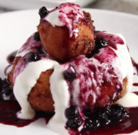

|

|
- 500 g farmer cheese 1.1 lbs/ 2 ¼ cups
- 2 eggs
- a few drops rum aroma
- 75 g granulated sugar 2.6 oz/ ⅓ + 1 tablespoon
- 1 sachet vanilla sugar
- 230-250 g all-purpose flour 8.1 – 8.8 oz / about 2 cups
- 1 teaspoon baking soda
- cooking oil for frying the doughnuts
- 250 g smetana or crème fraiche to serve, 8.8 oz/ about 1 cup
- whole fruit runny blueberry jam to serve or sour cherry, blackberry, black currants jam etc
|